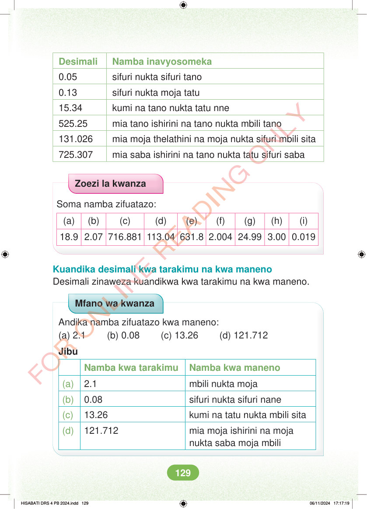

Desimali Namba inavyosomeka 0.05 sifuri nukta sifuri tano 0.13 sifuri nukta moja tatu 15.34 kumi na tano nukta tatu nne 525.25 mia tano ishirini na tano nukta mbili tano 131.026 mia moja thelathini na moja nukta sifuri mbili sita 725.307 mia saba ishirini na tano nukta tatu sifuri saba Zoezi la kwanza Soma namba zifuatazo: (a) (b) (c) (d) (e) (f) (g) (h) (i) 18.9 2.07 716.881 113.04 631.8 2.004 24.99 3.00 0.019 Kuandika desimali kwa tarakimu na kwa maneno Desimali zinaweza kuandikwa kwa tarakimu na kwa maneno. Mfano wa kwanza Andika namba zifuatazo kwa maneno: (a) 2.1 (b) 0.08 (c) 13.26 (d) 121.712 Jibu Namba kwa tarakimu Namba kwa maneno (a) 2.1 mbili nukta moja (b) 0.08 sifuri nukta sifuri nane (c) 13.26 kumi na tatu nukta mbili sita (d) 121.712 mia moja ishirini na moja nukta saba moja mbili HISABATI DRS 4 PB 2024.indd 129 HISABATI DRS 4 PB 2024.indd 129 06/11/2024 17:17:19 06/11/2024 17:17:19